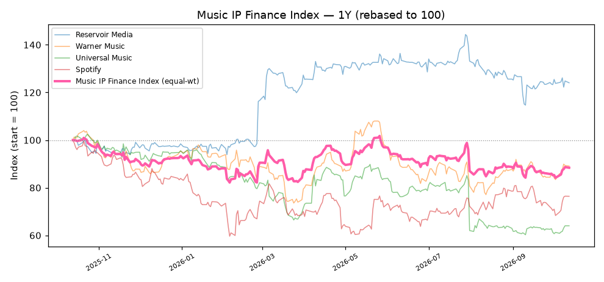

資料日期：2026-10-13 · 產生時間：2026-10-13 07:13 · 每日自動更新 · 🆕 = 近 7 天新資料
⏳ 判決全文將於每日台灣 00:00–06:00 由排程自動抓取並更新。
Today the Justice Department announced charges involving 16 individuals, including an illegal alien, in connection with illegal voting, fraudulent voter registration, and related election crimes across the country. The c…
A Colombian national charged in two separate federal indictments involving the alleged laundering of more than $2 billion in connection with Venezuelan government bribery schemes will make his initial appearance on the a…
Sarah Blood, 44, of Richmondville, New York, was sentenced on September 29, 2026 by United States District Judge Anne M. Nardacci to 5 years’ probation, including 8 months’ home detention, for stealing over $200,000 from…
A North Hollywood man was sentenced today to 70 months in federal prison for his role in a series of fraud schemes that caused nearly $5 million in losses to federal COVID 19 relief and small business lending programs.…
The Securities and Exchange Commission today proposed amendments to the Investment Company Act “cross-trading rule,” which permits transactions in securities between a registered fund and its affiliates under certain con…
The Securities and Exchange Commission today moved for entry of a final judgment by consent against Stephen Kenneth Leech II, the former co-chief investment officer of registered investment adviser Western Asset Manageme…
FY2026 closed with about 450 IPR petitions, a third of FY2025. Institution decisions fell to 860, and the grant rate dropped from 69% to 39%. Continue reading this post on Patently-O.…
本篇分享國慶創作，祝大家平安健康喜樂滿足。連結：https://www.instagram.com/p/DeWDLUHGLGZ/?mdxt=MWc4ZW0yZzJ6OXl2bA==https://www.instagram.com/p/DeTARdUGJGH/?srtk=MXRvNWNuajk2aW1oMg==https://www.instagram.com/p/DeUEzpcGLw5/?xtok=d3g2M3Fobjludjdw著作…
USPTO and IU Maurer announce a Spring 2027 PTAB Law School Moot Court Competition: one brief, APJ panels, and an in-person final in Alexandria. Continue reading this post on Patently-O.…
New data on 8.75 million patents: means-plus-function claims are down to 3%, but functional claiming hit 74%. Who changed, and what replaced it? Continue reading this post on Patently-O.…
Point-of-novelty claims are rare: Jepson claims appear in 0.03% of U.S. patents, and the European two-part form in well under 1%. Continue reading this post on Patently-O.…
Chief Judge Moore rebukes J&M's counsel for touting credentials at Markman, yet the panel signals that "askewed angle" is broad, not indefinite. Continue reading this post on Patently-O.…
設計專利系列(一) - 設計侵權標準與案例解析 - 上傳版 Ron…
之前的最高法院民事裁定報導：犀牛盾RHINOSHIELD v. 惡魔殼DEVILCASE「違反公平交易法」之判決 - 最高法院民事裁定113年度台上字第1585號（https://enpan.blogspot.com/2024/10/rhinoshield-v-devilcase-1131585.html）。以下筆記3審內容：整理多個判決參數：第(1)審：智慧財產及商業法院 110 年度 民公訴 字第 9 號判決(112.06.06)（…
There's a curious double standard in the way we talk about intellectual property (IP) in America. When someone copies a copyrighted work without permission, we recognize that the creator has rights. Copyright infringemen…
A brand protection program can remove thousands of infringing listings and still leave the business behind them largely intact. Sellers return under different accounts, storefronts multiply, and counterfeit goods continu…
The asserted quasi-SEPs relate to physical unclonable function (PUF) technology, which has important applications in authentication and cryptography.…
The four consecutive reexamination wins also reinforce the strength of the SEPs in Sisvel’s Wi-Fi patent pool, Chief IP Officer Heath Hoglund noted today.…
The Board found the claims lacked priority, so a clinical study publication destroyed novelty, leaving Ozempic and Wegovy potentially vulnerable to competition earlier than expected.…
This is a summary of developments in and around the UPC in the calendar week of October 5, 2026. It was a slow week in terms of decisions.…
The American Apparel & Footwear Association (AAFA) submitted comments to the Office of the United States Trade Representative (USTR) on October 7, recommending that USTR include Facebook, Instagram, Alibaba.com, AliExpre…
This week in Other Barks & Bites: record quarterly profits reported by Samsung Electronics belie an AI chip shortage likely to last into 2028; a major American apparel industry organization calls for the inclusion of Met…
My new article “Process Tracing China’s Pharmaceutical IP Reforms: Foreign Pressure, Domestic Innovation, and Institutional Change” is now available on SSRN at https://papers.ssrn.com/sol3/papers.cfm?abstract_id=7472640.…
Chen Fuli’s appointment as Party Secretary of CNIPA brings an experienced trade lawyer, diplomat and legislator into the agency’s top leadership as Shen Changyu prepares to move to WIPO. Chen previously served as China’s…
Join us on September 10 for a free, virtual Asia Society Northern California program, “Critical Minerals, Technology, and the Future of U.S.-China Competition,” featuring Walter Copan, Gloria Xiong, and Cory Combs. We wi…
On the 100th anniversary of my father Ronald Cohen’s birth, I look back at two public-health innovations he helped develop: a blocked-flue safety control designed to prevent carbon monoxide poisoning in New York City ten…
Why does China increasingly treat intellectual property as a strategic instrument of national development, international influence, and global governance while the United States often continues to view it primarily throu…
National Radio and Television Administration General Office Guang Dian Ban Fa (2021) 267 All provincial, autonomous region and municipal radio and television bureaus, the Xinjiang Production-Construction Corps Culture, S…
All provincial, autonomous region and municipal Party Committee cybersecurity and informatization offices, the Xinjiang Production-Construction Corps Party Committee Cybersecurity and Informatization Office” Since the “C…
YBJBF No. (2021)24 All banking supervisory bureaus, all large-scale banks, shareholding-type banks and foreign invested banks: In order to promote commercial banks to effectively implement the “Provisional Rules for the…

| 標的 | 價格 | 近1年 |
|---|---|---|
| Reservoir Media RSVR | 9.54 | +24.1% |
| Warner Music WMG | 28.65 | -10.9% |
| Universal Music UMG.AS | 14.90 | -36.0% |
| Spotify SPOT | 528.80 | -23.6% |
| 音樂 IP 金融指數 INDEX | — | -11.6% |
Protecting and utilizing intellectual property (IP) are strategic aspects of the creative economy, yet the sector faces challenges in transparency, data security, and governance efficiency. Blockchain technology—characte…
Generative AI is shifting digital rights management from access control to managing an ongoing rights relationship across training, inference, and output. Addressing linked challenges in provenance, identification, attri…
The rapid development of Generative Artificial Intelligence (GenAI) has gradually intensified the debate around the lawful use of copyrighted works during the training phase of AI models. GenAI works by processing a larg…
Objective: This article presents a comparative legal analysis of NFT regulation in the Russian Federation, the Republic of Uzbekistan, and the United States of America, three jurisdictions that have adopted markedly diff…
The traditional knowledge held by indigenous communities in Indonesia faces new threats with the development of the digital economy, ranging from data mining by generative artificial intelligence to the tokenization of n…
Abstract Access-based consumption, defined as transactions that may be market mediated in which no transfer of ownership takes place, is conceptualized by Bardhi and Eckhardt (2012). While it was introduced to explore co…
Non-fungible tokens (NFTs) now attract personal property rights but continue to challenge existing copyright law. NFTs consist of a digital file, which is either linked to or embedded within a CryptoToken. Copyright in a…
This study investigates the legal status of Non-Fungible Tokens (NFTs) from an Islamic perspective. NFTs, as unique digital assets recorded on blockchain, raise complex questions in Shariah due to their intangible nature…
(Slip Opinion) OCTOBER TERM, 2025 1 Syllabus NOTE: Where it is feasible, a syllabus (headnote) will be released, as is being done in connection with this case, at the time the opinion is issued. The syllabus constitutes…
PRELIMINARY PRINT Volume 601 U. S. Part 2 Pages 366–376 OFFICIAL REPORTS OF THE SUPREME COURT May 9, 2024 Page Proof Pending Publication REBECCA A. WOMELDORF reporter of decisions NOTICE: This preliminary print is subjec…
20-3816 ABKCO Music, Inc. v. Sagan 1 UNITED STATES COURT OF APPEALS 2 FOR THE SECOND CIRCUIT 3 ____________________ 4 5 August Term, 2021 6 7 (Argued: March 14, 2022 Decided: October 6, 2022) 8 9 Docket Nos. 20-3816(L),…
17‐3595‐cv Ennio Morricone Music v. Bixio Music Group United States Court of Appeals for the Second Circuit AUGUST TERM 2018 No. 17‐3595‐cv ENNIO MORRICONE MUSIC INC., Plaintiff‐Appellant, v. BIXIO MUSIC GROUP LTD.,…
The decentralized nature of the bitcoin ecosystem, in contrast to traditional banking techniques, attracts attention due to the advantages of speed and flexibility offered by digital technology. This study examines the p…
The Decentralized Autonomous Organization (DAO) Governance Deadlock and Crisis Velocity represents a fundamental structural and operational paradox within modern decentralized digital project management, blockchain-drive…
ABSTRACT Blockchain introduced secure, peer‐to‐peer transactions in decentralized environments without reliance on central authorities. However, attackers continue to exploit blockchain projects. Over the past decade, re…
The global artisanal goods market faces significant challenges related to product authenticity, verifiable provenance, and efficient market access for independent creators. This paper presents a novel omnichannel marketp…
The study examines the crisis of transparency and governance in global waqf management, shown by land encroachment and underutilized cash waqf . It proposes a WAQF -TWIN architecture to modernize the sector through a thr…
This study advances blockchain literature by adopting a multistakeholder lens to examine its adoption and its prospective industry impact. Drawing on semi-structured interviews with senior professionals from incumbent in…
Abstract This conceptual paper examines the ethical challenges of ascribing responsibility when an Agentic AI embedded within a smart contract leads to harm or an unintended and undesirable outcome. It becomes exceedingl…
IN THE COURT OF CHANCERY OF THE STATE OF DELAWARE HASH ASSET MANAGEMENT LTD., ) ) Plaintiff, ) ) v. ) C.A. No. 2025-0374-BWD ) DMA LABS, INC., ICHI ) FOUNDATION, NICK POORE, ) BRYAN GROSS, TYLER CHRISTIAN ) PINTAR, and J…
Filed 1/15/25 CERTIFIED FOR PUBLICATION IN THE COURT OF APPEAL OF THE STATE OF CALIFORNIA FIRST APPELLATE DISTRICT DIVISION TWO PARAFI DIGITAL OPPORTUNITIES LP et al., Plaintiffs and Appellants, A168960 v. (San Francisco…
Case: 23-50669 Document: 123-1 Page: 1 Date Filed: 11/26/2024 United States Court of Appeals for the Fifth Circuit United States Court of Appeals Fifth Circuit ____________ FILED November 26, 2024…